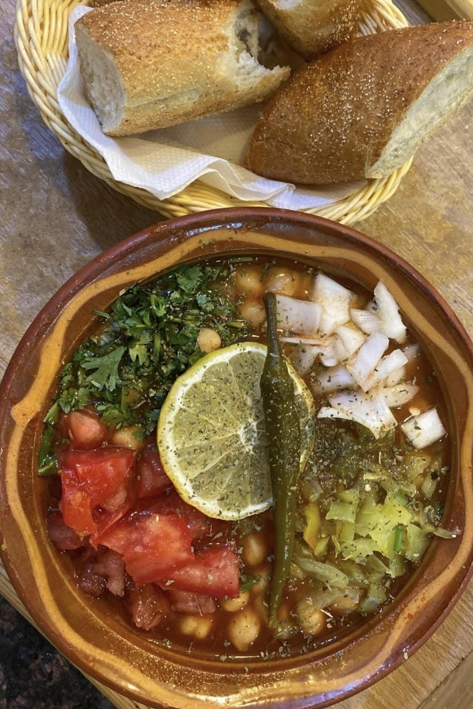

dobara

description
Dobara is a hearty traditional dish from Biskra in Algeria, typically made with chickpeas (or fava beans) cooked in a spicy, garlicky sauce, and topped with fresh herbs. It’s warming, full of flavor, and often enjoyed with bread.
ingrediants
2 cups cooked chickpeas (or fava beans)
2–3 garlic cloves, minced
2 tbsp olive oil
1 tsp paprika
½ tsp cumin
½ tsp harissa (or chili paste)
Salt & pepper
Chopped tomato & onion (optional)
Fresh coriander & green chili peppers, chopped
Lemon juice
steps
- In a pot, heat olive oil, add garlic, paprika, cumin, and harissa. Stir until fragrant.
- Add chickpeas (with a little cooking water or broth). Simmer for 10 minutes.
- Season with salt & pepper.
- Serve hot, garnished with chopped tomato, onion, coriander, and green chili.
- Squeeze lemon juice on top before eating. Enjoy with crusty bread!
Home